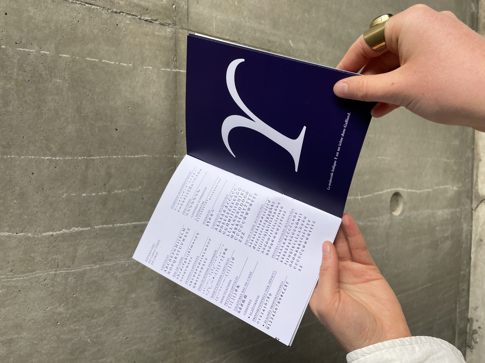
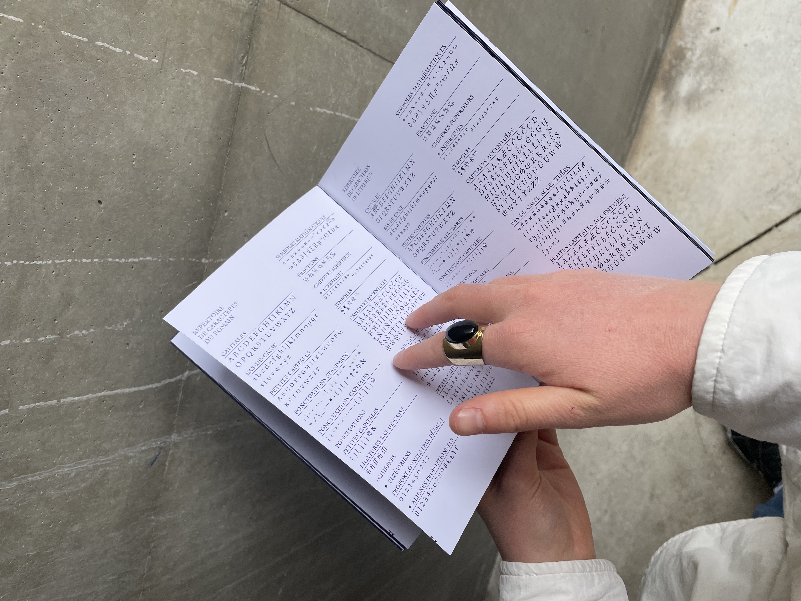

SPÉCIMEN GALLIARD, 2022, Typographie
Galliard est le nom d’une typographie dessinée par Matthew Carter et publiée en 1978 par la Mergenthaler Linotype Company. Il a pris modèle sur le travail de Robert Granjon, un graveur de poinçons du XVIe siècle, dont les caractères étaient réputés pour leur beauté et leur lisibilité.

